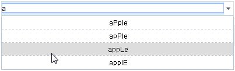

8.AutoComplete
수정 일자 버전 (SP2)
WebSquare5 Studio : 20180117_1349_x86_B
WebSquare5 Engine : 5.0_2.2982B.20180223.154326_1.5
AutoComplete 컴포넌트는 입력된 텍스트에 따라 자동 완성 기능을 제공합니다.
SelectBox의 확장 컴포넌트로 특정 문자열에 대한 자동완성 및 검색기능을 제공하거나 정적데이터와 동적데이터 설정이 가능하며, Enter키 또는 사용자 키입력을 이용하여 실시간으로 해당되는 리스트를 서버에서 조회 가능합니다.
주요 API는 SelectBox와 유사합니다.
8.1Property
Property | Description |
|---|---|
allowEmptySubmission | [default:false, true] interactionMode속성이 true 일 경우 빈 문자열의 검색 허용 유무 |
animation SP2 | itemtable의 animation을 설정한다. |
caseSensitive | [default:true, false] 검색 시 영문 대소문자 구분 여부 |
chooseOption | [default:false,true] 선택항목 표시 여부로 chooseOptionLabel속성이 설정되어 있지 않으면 label은 "-선택-"으로 value는 ""(empty string)으로 설정된다. |
chooseOptionLabel | chooseOption속성이 true로 설정 된 경우 label에 표현 될 text를 정의 한다. |
chooseOptionValue | 선택옵션 value |
class | 사용자 정의 class |
delimiter | displayMode속성에서 참조하고 있으며 value와 label을 함께 표현 할 때 사용하는 구분자이다. displayMode속성의 "delim"에 해당하는 값이 본 속성에 정의 된 값이다. |
direction | [defulat:auto, down, up, fit] 항목의 열림 방향. |
disabled | 컴포넌트에 비활성 여부 |
disableEdit SP2 | [default:false, true] click했을 때 edit모드로 진입하고 목록만 나타나도록 할지 여부 |
displayMode | [default:label, value delim label, label delim value] 항목의 표현 방법으로 label과 value를 함께 표현 할 수 있다.delim(구분자)는 delimiter속성에 정의 된 값을 참조한다. |
editType | [default:select, focus] 사용자가 컴포넌트를 클릭하여 input에 포커스가 발생했을 때 선택된 Text를 selection할지(select), Text의 맨 끝으로 커서를 이동(focus)할 지를 설정한다. |
emptyIndex SP2 | 처음 autoComplete를 그릴 때 선택하게 할 아이템의 인덱스. emptyItem 속성을 true로 주고, emptyIndex 속성을 -1 값으로 주면 초기로딩시 빈 값을 선택하게 할 수 있다. |
emptyItem SP2 | [default:false, true] 항목에 없는 value나 index가 설정되는 경우(setValue, setSelectedIndex와 같은 API로 설정) 빈 label과 빈 value(empty string)로 설정 할지에 대한 여부. 별도의 value를 설정하고자 할 때는 emptyValue속성을 이용하며 빈 value가 설정된 상태에서 item이 추가되거나 삭제되면 첫번째 항목이 선택된다.(HTML select에서 selectedIndex=-1 기능) 주의 사항으로 chooseOption속성이 true일 경우에도 label은 ""(empty string)으로 표현된다. |
emptyValue SP2 | emptyItem속성이 true로 설정 된 경우 본 속성의 값으로 value를 설정한다. 주의 사항으로 emptyValue에 정의 된 값이 항목의 value와 동일하더라도 label은 ""으로 표현된다. |
escape | <>&"를 HTML Escape 문자로 변환하여 화면에 표시합니다. |
interactionEnterKey SP2 | [default:false, true] interactionMode = "true"인 경우, 입력창에 값을 입력 후 enter 키를 눌렀을 때만 submission이 실행되도록 설정. interactionKey = "all" 인 경우에는 동작하지 않음. |
mandatory | [default:false, true]validate API를 호출 시 필수입력을 체크 할지의 여부. |
nextTabID SP2 | tab으로 이동시 이동할 컴포넌트 ID |
search | [default:start, contain, none] interactionMode속성이 false일 때의 사용자가 입력한 값에 대한 검색 모드.start:입력값과 항목의 시작과 같을 경우만,contain:입력값이 항목 어디든 속해 있는 경우,none:입력값이 항목과 완전히 같은 경우만. |
sortMethod | [default:ascending, descending] sortOption속성에서 참조하며 sortOption에 정의 된 값에 대한 정렬 방법. |
sortOption | [label,value] 항목을 label 또는 value를 기준으로 정렬 할 때 사용된다. 기본적으로 ascending으로 정렬되며 sortMethod속성에 값이 정의 된 경우 해당값으로 정렬 방법이 결정된다. |
submenuSize | [default:fixed, auto] 목록(항목)창 크기를 label에 맞출지 기본 width로 고정 할지에 대한 설정. |
textAlign | [default:center, left, right] 항목의 text 정렬 방법. |
title | HTML의 title속성과 동일한 기능으로 명시 된 값을 브라우저에서 마우스 over시 툴팁형태로 표현한다. 일반적으로 웹접근성 작업 시 설정한다. |
useKeywordHighlight | [default:false, true] 검색된 항목중 keyword에 별도의 class를 적용할 지의 여부. true로 적용할 경우 검색된 키워드에 "w2autoComplete_keyword" class가 추가된다. |
8.2브라우저 캡쳐화면
[그림 8-1]01
8.3일부 속성 설명
8.3.1caseSensitive
대소문자 구분 없이 검색할 수 있는 옵션입니다. true일 때는 대소문자를 구분하여 검색하고, false일 때는 대소문자 구분없이 검색합니다.
8.3.2emptyItem, emptyValue
setValue() 나 setSelectedIndex() API 를 통해 옵션에 없는 값을 설정할 경우 표현 모드와 값을 설정할 수 있습니다.
emptyItem 은 위의 API 를 통해 옵션에 없는 값을 설정하였을 경우 selectBox 의 label 을 "" (빈 값)로 설정할지에 대한 여부를 [true, false] 를 통해 설정할 수 있습니다.
emptyValue 은 위의 API 를 통해 설정한 selectBox 의 빈 label 의 value 값을 설정할 수 있습니다. 기본값은 "" 입니다.
[그림 8-2]autocomplete_1
8.3.3search
사용자가 입력한 값에 대한 검색 모드를 설정하는 옵션입니다.
start : 입력값과 옵션의 첫 초성이 같을 때 contain :입력값을 포함하는 옵션일 때 none : 입력값과 옵션이 완전 일치할 때
caseSensitive="true", search="start"
(대소문자를 구분하고, 첫 초성이 같은 옵션 찾기)
<w2:autoComplete id="autoComplete2" search="start" caseSensitive="true"></w2:autoComplete>
[그림 8-3]02
caseSensitive="false", search="start"
(대소문자를 구분하지 않고, 첫 초성이 같은 옵션 찾기)
<w2:autoComplete id="autoComplete2" search="start" caseSensitive="false"></w2:autoComplete>[그림 8-4]03
caseSensitive="true", search="contain"
(대소문자를 구분하고, 입력값을 포함하는 옵션 찾기)
<w2:autoComplete id="autoComplete2" search="contain" caseSensitive="true"></w2:autoComplete>
[그림 8-5]04
caseSensitive="false", search="contain"
(대소문자를 구분하지 않고, 입력값을 포함하는 옵션 찾기)
<w2:autoComplete id="autoComplete2" search="contain" caseSensitive="false"></w2:autoComplete>[그림 8-6]05
caseSensitive="true", search="none"
(대소문자를 구분하고, 입력값과 완전 일치하는 옵션 찾기)
<w2:autoComplete id="autoComplete2" search="none" caseSensitive="true"></w2:autoComplete>[그림 8-7]06
* caseSensitive="false", search="none"
(대소문자를 구분하지 않고, 입력값과 완전 일치하는 옵션 찾기)
<w2:autoComplete id="autoComplete2" search="none" caseSensitive="false"></w2:autoComplete>[그림 8-8]07
8.3.4useKeywordHighlight
조회된 결과 아이템 리스트에서 입력된 키워드 문자열에 대해서 스타일을 지정하여 강조할 수 있습니다. 검색된 keyword에 강조 스타일을 적요할 것인지에 대한 여부는 true, false 옵션으로 설정합니다.
<w2:autoComplete id="autoComplete2" search="contain" useKeywordHighlight="true"></w2:autoComplete>[그림 8-9]08
8.4CSS Overriding
[그림 8-10]09
No | Class | Description |
|---|---|---|
1 | w2autoComplete | 웹스퀘어 엔진에서 정의된 클래스입니다, 브라우저가 파싱할때 자동으로 부여되는 클래스 입니다. autoComplete 인 select 영역을 감싸는 그룹 이며, 배경색과 테두리색 등을 지정합니다. option 영역은 별개의 마크업으로 분리되어 있습니다. |
2 | w2autoComplete_selected | select 영억을 선택하였을 때의 css 를 지정합니다. |
3 | w2autoComplete_col_label | select 영역의 label 부분입니다. |
4 | w2autoComplete_col_button | select 영역의 화살표 버튼 부분입니다. |
5 | w2autoCpmplete_input | select 영역의 검색 부분입니다. autoComplete 안의 input 의 스타일은 엘리먼트 스타일로 들어있기 때문에 !important 를 사용하여 지정합니다. |
6 | w2input_table_sb | 웹스퀘어 엔진에서 정의된 클래스입니다, 브라우저가 파싱할때 자동으로 부여되는 클래스 입니다. option 영역을 감싸는 그룹 이며, 배경색과 테두리색 등을 지정합니다. |
7 | w2input_table_sb_col | option 영역에서 각 항목마다 부여된 클래스 입니다. |
8 | w2input_table_sb_col_over | option 에 마우스 오버하였을 때 표현되는 클래스입니다. |